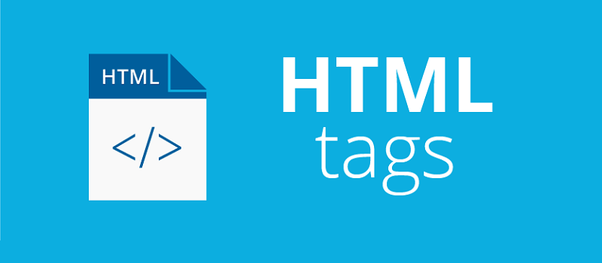

This is the process of building and maintenance of websites, social media,
electronic businesses and applications for the internet. There are two kinds of websites
based on functionality.
Static Websites:
It has little or no animation. Special functions are specified with
JavaScript. The number of pages ranges from 1 - 3 pages. Information or
content associated with the website does not need to be edited regularly.
Examples include portfolios, tributes pages, forms.
Throughout the duration of the mentorship, this is what is focused on.
Dynamic Websites:
It has a lot of functionality controlled by scripts written or added externally.
Its content needs to be edited rgularly and kept up-to-date. Examples of such type
of websites include blogs, E-commerce websites.
Paths to web development
There are different paths to web development. They are:
Front end: Also known as the client end as it is what the users see. HTML and CSS
is majorly used. It is associated with static websites
Back end: It involves everything that makes a website responsive when elements are interacted
with. C#, Python, Ruby are used to achieve this. It is associated with dynamic
websites.
Fullstack: It is the combination of both frontend and backend.
What you need to get started
To launch your career in Web development in whatever path you might have chosen, the following
needs to be installed on your personal computers:
A code editor or IDE for writing out your code e.g Visual Studio Code, Sublime text, Atom.
A web browser for viewing the output e.g Mozilla firefox, Google Chrome, Microsoft Edge.
What HTML is and is notHTML 5
HTML stands for Hypertext Markup Language. A markup Language
used for adding structure and context to documents to be displayed in a
web browser. Its documents are files extensions that ends with
.html or .htm. The recent version HTML5 known as
HTML living standard.
It uses its elements e.g header, main, article etc for giving
meaning to content on the web. Over time, there has been a huge debate
whether HTML is a programming language or not.
Those for it believes since it instructs the computer on
what to do, how content should be displayed, hierachy of the display
and because it involves code . A declarative language i.e it gives declarative
instructions to a computer.
Some others would argue against because it contains no programming language
, variables cant be declared, the absence of if-else statement, cant evaluate
mathematical expressions, can't write functions, can neither take an input nor
give an output, it is unable to carry out tasks.
Structure of HTML

HTML documents are files that end with .html or .htm extension. Each HTML
page element is wrapped around tags which is the building blocks of web pages. They create a
hierarchy that structures the contents into sections, paragraphs, headings and other content
blocks.
Most HTML elements have an opening and closing tag e.g <p></p> while others are
self-enclosing e.g <img>
There are two main types of HTML tags.
Block-level tags:
It takes up the fulla available space and always start a new line in the document.
Headings, paragraphs, articles are great examples.
Inline tags:
It takes as much space as needed and does not start a new line on the page. They are
used to format inner contents of block level elements. Links, bold texts, quotes are examples
of inline tags.
Block level tags
Every HTML document needs to contain the <html>, <head> and <body>.
<html></html> is the highest level element that encloses every HTML page.
<head></head> contains information like page title, meta information, stysheets,scripts.
<body></body> encloses all the content that appears on the page that can be seen by the user.
Elements
Symbols
Use
1.
Headings
<h1..h6></h1..h6>
For writing An headlline. The bigger the size, the level of importance
2.
Blockquote
<blockquote></blockquote>
Quotes often go here, with the <cite> tag
3.
Forms
<form></form>
The parent tag for an HTML form
4.
Header
<header></header>
Specifies the webpage heading, could also be used for objects in the webpage
5.
Paragraphs
<p></p>
For paragraphs with plain texts
6.
Divisions
<div></div>
For dividing the webpage content into blocks
7.
Images
<img>
For displaying images on a webpage, used with the src, alt, height, width attribute
8.
Lists
<ol/ul/dl></ol/ul/dl>
ordered list for listing items orderly, used with <li> for listing individual items
unordered list for listing items randomly, used with <li> for listing individual items
description list for listing items with their desciption, used with <dt> for the title and <dd> for details
9.
Tables
<table></table>
For grouping data into table, used with the <thead> and <tbody> containing <tr> and <td>
10.
Main
<main></main>
For marking the main contents of a webpage
11.
Section
<section></section>
Specifies a particular sectionin the webpage
12.
Footer
<footer></footer>
Specifies the webpage footer. Could also be used for objects in the webpage
13.
Aside
<aside></aside>
For displaying content in a sidebar of the webpage
14.
Figure
<figure></figure>
Used to house figures(diagram, charts, images) with the <figcaption> for description of the figure
15.
Article
<article></article>
Used for representing clippings from an article or an actual article
16.
Navigation
<nav></nav>
For navigating links in a webpage
17.
Fieldset
<fieldset></fieldset>
Used in a form to group a list of options to be selected form with <legend> for decribing what the options is
Table 1. More examples on block-level tags
Inline tags
They are used to format texts within a block-level element
Elements
Symbols
Use
1.
Break
<br>
For inserting line breaks when a new line is needed
2.
Span
<span></span>
For injecting elements like images, emoticon, text without ruining the styling of the page
3.
Strong
<strong></strong>
For making text and emphasizing a point
4.
Emphasis
<em></em>
For emphasizing texts but displays in italics
5.
Superscript
<sup></sup>
For writing a superscript i.e font above the mid-point of normal font e.g 52
6.
Subscript
<sub></sub>
For writing text below the mid-point of normal font e.g H2O
7.
Cite
<cite></cite>
For citing the author of a quote
8.
Time
<time></time>
For formatting date and time
9.
Quote
<q></q>
For writing quotes inline
10.
Strikethrough
<strike></strike>
Used to draw a line at the center of the text to make it appear as unimportant or no longer useful
Examples of Inline elements
HTML characters
They are used to mainly specify a line not as code to be executed but read as part of the page content and also
for providing symbols not available for use.
What CSS is
Cascading Style Sheet is a style sheet used for describing thr presentation of a document
written in a markup language such as HTML. It transforms texts on a webpage from plain to something
visually safisfying. It specifies the page layout, color, fonts of the document. its file extension ends with .css.
There are three various types of CSS that can be applied across a document.
Inline CSS
It contains the CSS property in the body section attached with the targeted element. It is specified
within an HTML tag using the Style attribute.
Example: <p style="color:#e5e5e5; font-size:20px; text-align:center">I am floating</p>
Internal or Embedded CSS
It is used when a single HTML document must be styled uniquely. The rule is set within the HTML file in the head
section. Example:
It contains seperate CSS file which contains only style property with the name of tag or attributes e.g class, id,
label. It is written in a separate file with the .css extension and linked to the html document using
the link tag. Style is defined once and for each element and applied across web pages. Example:
When multiple style sheets are defined on one page, thre following order is followed in the application of the styles
Inline has the highest priority, so any style defined in the internal and external style will be overriddden.
Internal has the next priority and would be applied before the external styles
External has the least priority. If no style is defined in inline or internal then external is applied.
CSS Animation
This is used to make objects move by defining the properties using the @Keyframe properties.
Example is a beatng heart animation. The html property is defined first <div class="heart"></div>
The heart class properties with the before and after properties are defined in the .css file extension as
When the page is loaded, an animated heart keeps beating.
Why Accessibility is important
It is important that the web be accessible to everyone inorder to provide equal access and equal opportunity to
people with disabilities e.g people who cannot read, people who cannot hear. It gives access to information and
allows interaction for many people with disabilities.
The alt attribute is used on image elements describing what the image is about for those who can not read making
screen readers able to read it. Captions are used for media (image, video, audio), tables, figures for easy accessibility.
The scope attribute used with tables helps read out tables by rows and column.
Proper HTML tags should be used for what is intended e.g the clipping from an article should be used with the
article element not the div element.
The ARIA(Accessible Rich Internet Applications) attribute enables accessible navigation landmark, error messges,
reading out a text as a whole even if they are written on separate lines.
The role attribute defines a specific role for type of object such as an aricle, alert, sllider.
The title tag should always be used so as to enable screen readers give description about the web page.